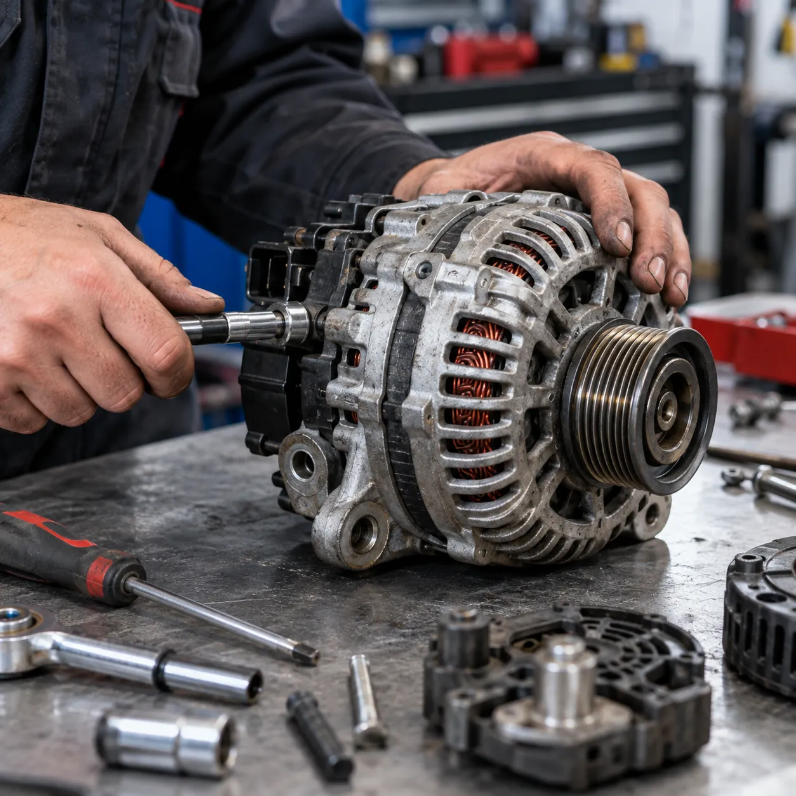
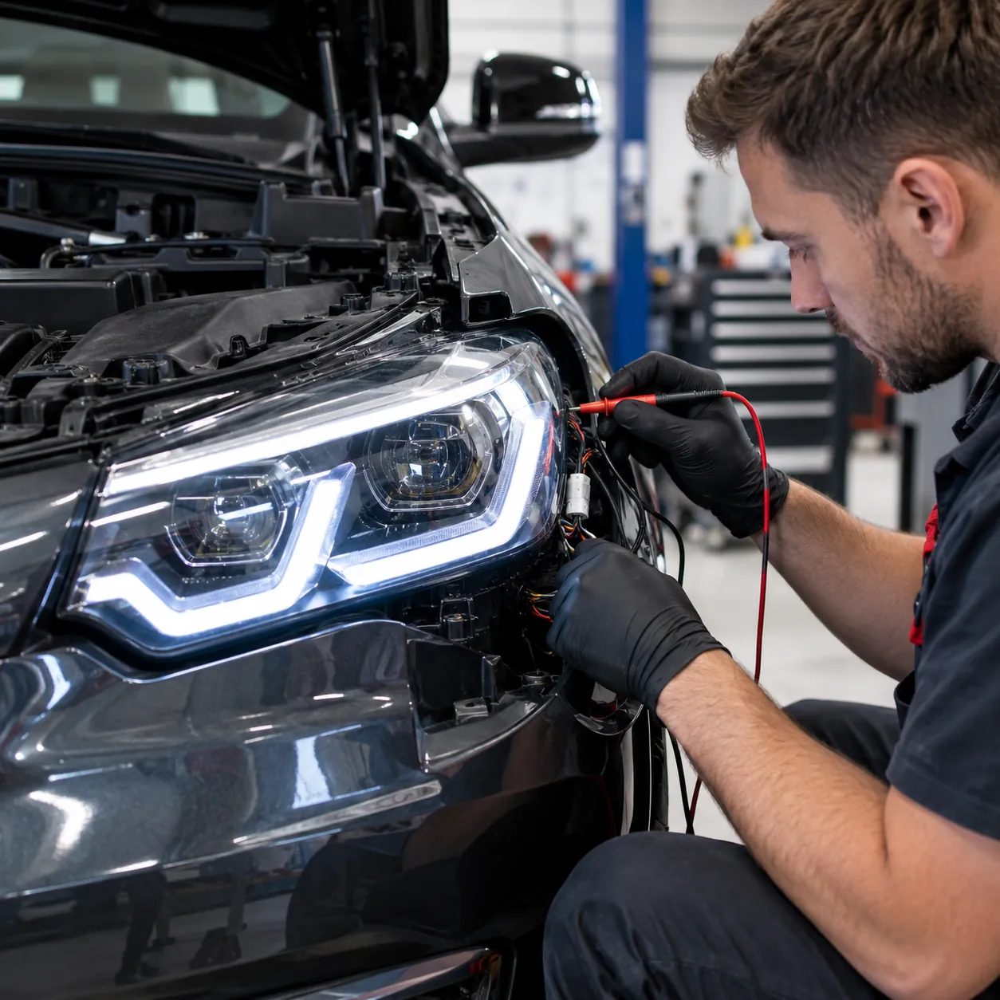

Contacto: prende todo el tablero
Con la llave en contacto se encienden todos los testigos. La batería cargada marca 12,6 V; debajo de 12,2 V ya no tiene fuerza para arrancar tranquila.
Consultar por la bateríaTrabajos garantizados · Arranques, alternadores, luces, carga y baterías · Zona Cremonte, Corrientes
Electricidad del automotor · Corrientes
Arranques, alternadores, luces, carga y baterías en un taller de zona Cremonte. Y detailing para que el auto salga impecable.
Lo que marca el tester
En cada paso la batería tiene que dar una lectura. Si no da, sabemos dónde buscar.

12,6V
Batería cargada, en reposo
Con la llave en contacto se encienden todos los testigos. La batería cargada marca 12,6 V; debajo de 12,2 V ya no tiene fuerza para arrancar tranquila.
Consultar por la bateríaAl girar la llave el arranque pide más de 100 A y la batería baja. Si cae de 9,6 V, hace clic o gira lento: revisamos batería, bornes y arranque.
Consultar por el arranqueCon el motor andando tiene que dar entre 13,8 y 14,4 V y el testigo de batería se apaga. Si queda prendido, el alternador no está cargando.
Consultar por el alternadorValores de referencia en autos de 12 V.
Cada trabajo con la lectura que tiene que dar cuando está bien.
Testigo prendido o batería que no carga: regulador, diodos, carbones y rulemanes, reparados en el banco.
Consultar por alternadores+100A
lo que pide al girar
No gira, gira lento o hace clic. Automático, bendix, carbones y bobinados.
Consultar por arranques12,6V
cargada, en reposo
Control de carga y prueba de arranque. Te decimos si alcanza con cargarla o hay que cambiarla.
Consultar por baterías14,2V
con el motor en marcha
Medimos lo que entrega el sistema andando, con luces y consumos prendidos.
Consultar por la carga<50mA
consumo con todo apagado
Batería que se descarga parada, fusibles que saltan y fallas que van y vienen.
Consultar por una falla eléctrica
Faros, giros, stop y posición. Luces que no prenden, que titilan o que bajan al frenar.
Consultar por lucesElegí lo que notás. Si tenés tester, sumá lo que marca la batería.
Lo más probable
El clic es el automático del arranque que intenta, pero no le llega la fuerza o el motor de arranque no gira.
Servicio: Arranques
Mandar el diagnósticoEs una orientación: el diagnóstico real se hace midiendo en el taller.
Batería, carga y consumo con instrumental, antes de cambiar una pieza.
Arranques y alternadores se desarman y se reparan en el taller.
La parte eléctrica y la estética del auto, sin ir a dos talleres.
Por WhatsApp, con el síntoma o con el resultado del diagnóstico de esta página.
Batería, arranque, carga y consumo. Te pasamos qué encontramos y el presupuesto.
Con la carga medida y la garantía del trabajo.
Zona Cremonte · Corrientes Capital
A pocas cuadras del Complejo Laii Dhahab.